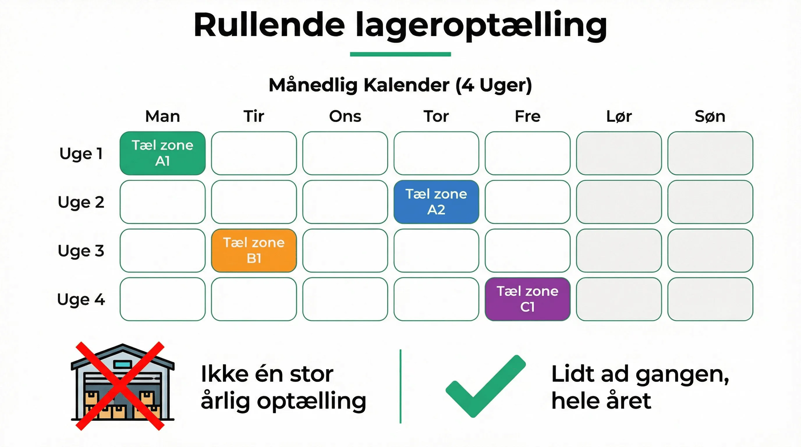

Revisor spørger, hvad lageret var værd den 31. december.
I tæller op i januar. Siden nytår er der solgt, modtaget og flyttet varer, så det tal I når frem til, er ikke det tal han bad om. Det er et tal fra i dag, brugt som om det var fra dengang.
De fleste lever med det, fordi alternativet føles værre: at lukke lageret mellem jul og nytår og tælle alt.
Der er en tredje vej, og den handler om hvad lageret kan fortælle, ikke om hvordan tallet bogføres.
Datoen er det svære, ikke prisen
Hvordan varen skal værdisættes er et spørgsmål til revisor. Om det er kostpris, gennemsnitspris eller noget tredje, er en regnskabsbeslutning, og den skal I ikke tage på lageret.
Det lageret skal svare på, er noget andet og sværere: hvor mange stk. lå der hvor, på en bestemt dag.
Kan systemet ikke svare på det, bliver enhver værdisættelse et gennemsnit af et gæt. Så er det ligegyldigt hvor præcis prisen er.
👉 Vil I kunne trække lagerværdien på en hvilken som helst dato? Tal med SmartPack →
Fire ting der gør decembertallet forkert
- Varer på rampen. Leverancen kom den 30., men blev først placeret den 2. januar. Er den med eller ej? Svaret skal være det samme i regnskabet og på lageret.
- Varer i produktionen. Råvaren er hentet, men den færdige vare findes ikke endnu. Den står ingen af stederne.
- Returvarer der ikke er behandlet. Kunden har sendt den tilbage, pengene er ikke refunderet, og varen står i returzonen. Den tæller kun, hvis returzonen er en rigtig lokation.
- Pakket men ikke afsendt. Ordren er plukket og står klar til fragtmanden. Den er ude af lageret i systemet, men står stadig på gulvet.
Det er ikke fire fejl. Det er fire steder hvor der skal være truffet en beslutning én gang, og hvor den beslutning skal gælde hver gang.
Tæl lidt ad gangen i stedet for alt på én dag
Den store årlige optælling har to problemer. Den koster en eller flere dages drift, og den er kun rigtig den ene dag.
Løbende optælling gør det modsatte: en håndfuld lokationer ad gangen, hele året, uden at stoppe noget. Lagerdata for hvor en vare er, er live, så man kan godt tælle en lokation op mens der plukkes fra en anden.
Det giver et lager der stemmer hele tiden, i stedet for et lager der stemmer den 31. december. Og det er den tilstand der gør, at man kan trække tallet bagud i stedet for at tælle sig frem til det.
Se hvordan løbende optælling fungerer i praksis.
Hvad I skal kunne svare revisor
- Hvor mange stk. af hvert varenummer lå der på datoen
- Hvor de lå, så en stikprøve kan kontrolleres
- Hvad der er tællet op siden sidst, og hvad der ikke er
- Hvilke differencer der er fundet, og hvad der skete med dem
- Hvordan varer på vej ind og på vej ud er behandlet
Det femte punkt er det, der plejer at tage tid, når ingen har besluttet det på forhånd.
Hvad SmartPack gør ved det
- Lagerværdien kan trækkes på en vilkårlig dato, også bagud i tid
- Løbende optælling på enkelte lokationer, uden at driften stopper
- Beholdning og lokation er live, så differencer ses samme dag i stedet for ved årsskiftet
- Returzone, mellemlager og rampe er rigtige lokationer, så varen altid tælles ét sted
- Batch- og lotnumre følger varen, hvis værdien afhænger af partiet
Hvordan tallet derefter bogføres, er en aftale mellem jer og jeres revisor. Lagerets opgave er at levere et tal der kan stå for en kontrol.
- Danfilter: 10.000 varenumre på 1.300 pallepladser, og lageret stemmer
- Uniq Perler: 9.000 varenumre på 200 kvadratmeter